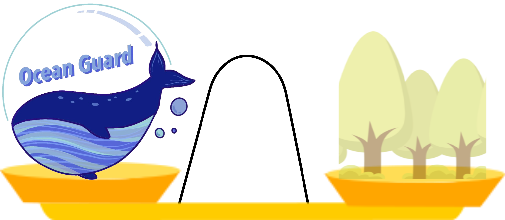
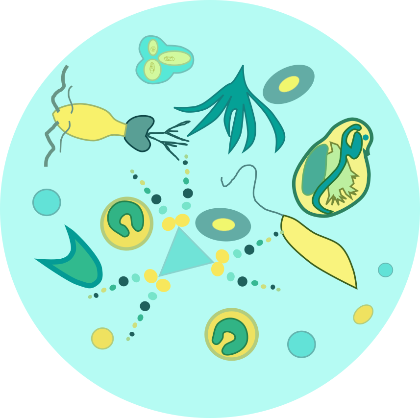

一鯨落,萬物生
當一頭鯨魚在生長於斯的海洋中死亡後，巨大的身軀會緩慢下沉至海底，成為無數海洋生物重要的食物及養分來源。 科學家將這過程稱為「鯨落」，而「鯨落十里，萬物重生」描述的不僅是鯨魚唯美詩意的死後歷程，也是大自然生死有度，和諧平靜的循環。
說到鯨魚，您會聯想到什麼？這些優游於大海中的巨大生物，長壽、聰明、神秘，並且富有魅力 ，是極具代表性的海洋生物，也是維持健康海洋生態系統不可或缺的角色，除此之外，還是地球上的重要「碳匯」。
2019 年 12 月，國際貨幣基金組織（International Monetary Fund）發表了「大自然對氣候變遷的解決方案」（ Nature's Solution to Climate Change）文章提到，若要拯救地球，一隻大型鯨魚（Great Whale）就如一千棵樹有效。
碳匯是儲存碳化合物的倉庫，海洋、土壤和森林是地球上主要的碳匯海洋每年可沉積20億噸碳森林每年可吸收5億碳。
海洋生物學家發現鯨魚在捕捉二氧化碳中，扮演著重要的腳色。每一隻大鯨魚平均能從大氣隔離 33 公噸的 二氧化碳，而一顆樹則一年吸收約 48 磅二氧化碳，比例相當懸殊。


只要有鯨魚的地方，就有浮游植物，而浮游植物不但提供了地球50%的氧氣，它們還捕捉了大氣中370億噸二 氧化碳，大約是全球的40%，相當於大約4座亞馬遜雨林。鯨魚的排泄物含有浮游植物生長所需的物質，尤其是鐵質和氮，所以當 鯨魚的排泄物飄上海面、接觸陽光，也就是浮游植物繁殖的開始，加上鯨魚遷徙，也助於擴散浮游植物的生長範圍
國際貨幣基金組織（International Monetary Fund）發表了「大自然對氣候變遷的解決方案」（Nature's Solution to Clima te Change）文章提到，若要拯救地球，一隻大型鯨魚（Great Whale）就如一千棵樹有效。科學家估計，每年下沉的鯨魚屍體能夠 移除 16 萬噸的碳，相當於每年保育 843 公頃的森林。能增加大量的浮游植物，即使只增加 1%，每年都可捕捉上億噸的二氧化碳， 相當於種植了 20 億棵大樹。
每年下沉的鯨魚屍體
移除 16 萬噸的碳
843 公頃的森林